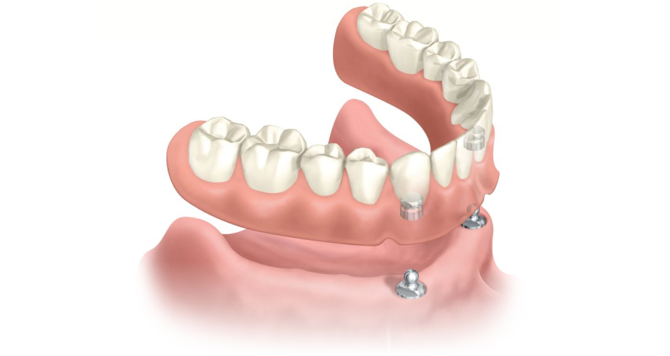
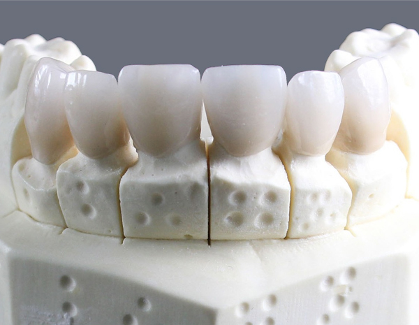
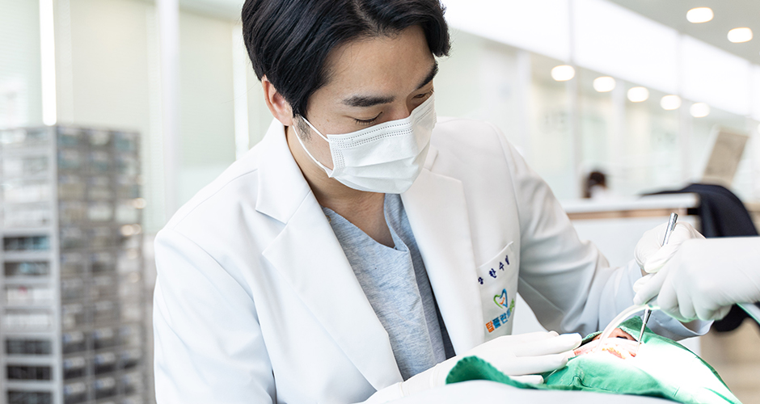
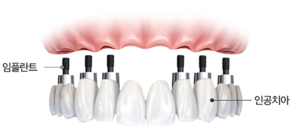
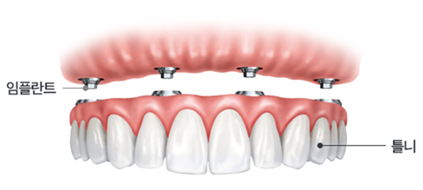
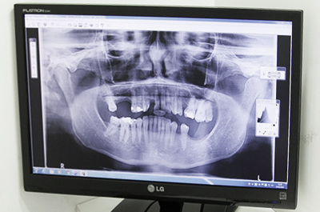
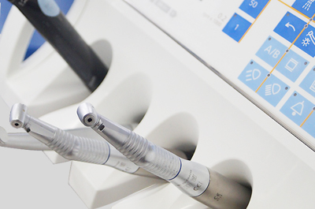
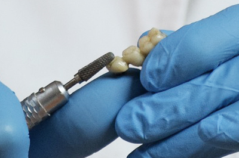
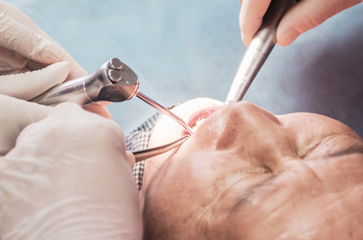

환자 상태 파악
치아, 뼈는 물론 당뇨, 고혈압 등
건강상태 전반 파악
<%=m_client_en%>
치아를 모두 상실한 경우 필요한 만큼의 임플란트를 식립하여, 치아 전체의 기능을 할수 있도록 합니다.
전체치아의 기능을 회복시켜주기 위해, 치아의 균형을 고려하여 정확하게 식립해야 합니다.

충치, 잇몸질환, 사고 등 다수의 치아가 상실하여 치아가 전혀 없거나
거의 남아 있지 않은 경우, 자연치아가 상실된 상태를 회복하기 위해
임플란트로만 전체를 치료하는 시술이 가능합니다.
이 경우 치아의 기능을 회복하기 위해 잇몸과 뼈상태를 고려하여,
필요한만큼의 임플란트를 식립하게 되고
편안함과 뛰어난 심미성으로 자연치아와 거의 유사하며
본래 치아의 기능을 회복할 수 있습니다.

전체 임플란트는 대부분 고령자가 수술을 받기 때문에
환자의 건강상태와 당뇨 등 직접적 영향을 주는 질환 유무에 따라 적절한 조치와 수술이 필요합니다 .

자연치아를 대체할 수 있을 정도로 튼튼하여 치아 기능을 완벽히 수행합니다.
자연치아만큼 자연스럽고 심미적으로 아름답도록 임플란트를 제작합니다.
임플란트 개수를 아래 치아 6~12개, 위 치아 8~12개 정도로 줄여
그 사이를 치아 모양으로 튼튼히 연결
잇몸 상태에 따라 뼈이식을 병행하여
잇몸뼈가 부족해도 문제없이 임플란트 시술이 가능

대부분의 치아를 상실한 경우 가장 좋은 치료방법중 하나로
잇몸뼈에 임플란트를 식립 후 고정성 보철물을 연결하는 방식입니다.
틀니보다 힘이 훨씬 좋고 내 치아처럼 사용할 수 있으며
전체 치아 기능의 90% 정도로 회복이 가능합니다.

대부분의 치아를 상실한 경우
최소 6개 정도 임플란트를 식립 한 후
틀니 형태의 보철물을 임플란트에 고정시키는 방법으로
틀니를 조금 더 편하게 사용할 수 있는 방법입니다.
치아 전체를 상실하였거나
1-2개 정도의 치아만
남은 경우
틀니를 사용하는 것에
불편함을 느끼시는 경우
구강질환이나 사고 등으로 인해
대부분의 치아를
발치해야 하는 경우
선천적으로
치아가 없는 경우
남은 치아가 흔들리거나
뿌리만 남은 경우
치아가 거의 남지 않아
음식을 먹기 힘든 경우

치아, 뼈는 물론 당뇨, 고혈압 등
건강상태 전반 파악

보철과 전문의와
구강외과 전문의의 협진

컴퓨터 모의 수술을 토대로
수술 장치 디자인 및 제작

디자인 결과에 따라
정확한 수술 진행